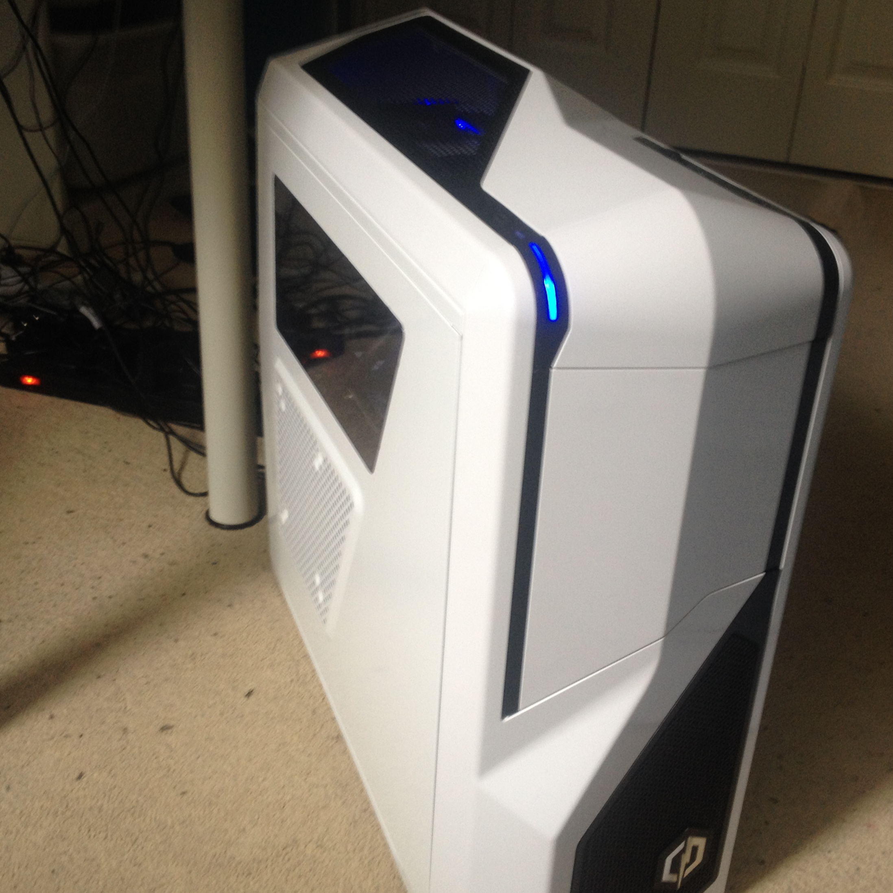

Outside of school, I spend most of my time on my reasonably new (at time of writing) gaming PC, as you can see to the right.
It cost just a smidge over £900, and works brilliantly! Money well spent, I tell you. I'm now saving my pennies for another monitor
and a new keyboard and mouse. I want the full gaming setup...
A quick specs list: Graphics Card is the ASUS Strix GTX 960 4GB, CPU is AMD FX 8350 8-core 4GHz, RAM is HyperX Savage 16GB (2x8GB) 2330MHz.
I've got a Kingston 240GB SSD then a secondary 1TB HDD, a 450-watt Corsair power supply and again Corsair water cooling. The motherboard is Gigabyte, but I'm not sure what the model name is.
The case is fantastic; it's the NZXT Phantom 410. I recommend it greatly.
As for speed, I clocked 2,500 frames per second while playing Minecraft (on low settings). With all settings on maximum I range from 200fps to 800fps.
About Me
This page is all about me, what I do and have done. Many interesting things lie on this page.
Hello, I'm Jamie. I'm 14 and from Scotland. I enjoy programming, and I aspire to be a game developer when I'm older.
I do well in school; top of very nearly all of my classes (my lowest test score in 3 years is 80%).
As you may have guessed, my favourite subjects are Maths and Computer Science. I particuarly enjoy showing off my experience in programming.
For example, when we were told to make our own website I managed to make better websites using Notepad++ (lovely piece of software) than the rest of the class using Adobe Dreamweaver.

When I'm not locked up in my room on my PC (which isn't often), I'm generally away camping with the Scouts. I've been in Scouts for 8 years now,
and have lots of experiences under my belt. My most notable achievement in Scouting is from the national camping competition, where our troop sent a team in and we came 4th!
I was leading the team, which is no easy task. There is loads of preperation before the competition even begins, and then the fateful weekend is a very stressful time.
The thing with camping competitions is everything has to be perfect, and with limited time, this is very hard.
Honestly, I'm rather annoyed with our place at 4th. When we were starting our aim was for 3rd, since our troop's record was 4th. There was very little space between us and 3rd, as little as 25 points. In a competition that's out of over 1,000 points, that's almost nothing.
Honestly, I'm rather annoyed with our place at 4th. When we were starting our aim was for 3rd, since our troop's record was 4th. There was very little space between us and 3rd, as little as 25 points. In a competition that's out of over 1,000 points, that's almost nothing.
As you can see, I have a dog. His name is Olly and he's about a year old. He's a golden retriever and is the most adorable thing in the universe (totally not biased...).
Though he is a very clever pup, Olly most definitely has his daft moments. He's a complete ninja at stealing your seat, and an expert at not letting himself be moved when he doesn't want to. And he is hell-bent on catching our neighbours cat. When he's not chasing it, he's barking at it. Some stereotypes are true, you know.
Though when Olly is nice and settled and snuggles up next to you on the couch, I'm most definitely glad I have a dog.
Though he is a very clever pup, Olly most definitely has his daft moments. He's a complete ninja at stealing your seat, and an expert at not letting himself be moved when he doesn't want to. And he is hell-bent on catching our neighbours cat. When he's not chasing it, he's barking at it. Some stereotypes are true, you know.
Though when Olly is nice and settled and snuggles up next to you on the couch, I'm most definitely glad I have a dog.